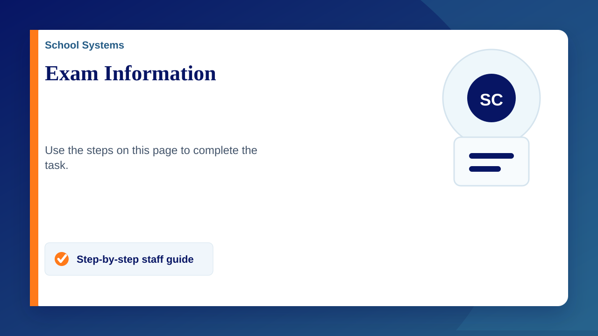

Logging in
Logging into Trelson (Chromebook)
- Open the Chromebook and power on
- Click apps in the bottom left
- Click Trelson/Chromex
- Click I am a Student
- Log into Google account
Logging into Trelson ( Windows Laptop)
- Open the laptop and power on
- Log into the exam account
if not already on screen please contact exam officer - Type the password
password will be given direct or on a separate sheet - Open “Safe Exam Browser”
- Click I am a Student
- Log into the school Google account
Common Issues
Chromebook stuck on a previous Trelson exam screen
- Press the power button until a menu appears
- Click Log Out
- Click Apps in the bottom left
- Click Trelson/Chromex
Trelson is not loading
- Exit Trelson by using step 1 & 2 in the instruction above
- Check the chromebook is connected to WiFi in the bottom right corner
- If it is not connected, connect to the correct exam WiFi network or use one of the spare laptops
- Click apps
- Open Trelson/Chromex
Red locked screen and cannot type passcode
- Press CTRL + Alt + Delete
- Log in again,you will now be able to type
No Wifi Connection
- Check connection status in the bottom right
- If Wifi is on go to step 3:
- Turn wifi on / Turn off airplane mode
- Connect to wifiStaff (details are saved on device)
- If device is failing to connect still, use one of the spare laptops
Useful Information
Trelson will automatically save work every few minutes as long as there is an internet connection, if a laptop dies there is no need to panic
Typically there are spare laptops in case one fails
Students should be reminded to frequently check that trelson is connected to the internet and syncing (indicated by the cloud on trelson)
Students should be reminded not to shut the laptop lid unless the laptop has been turned off first, this helps avoid many problems.
If any codes/passwords are needed please contact Exams Office ( toni.walton@claremontschool.co.uk ext:231)